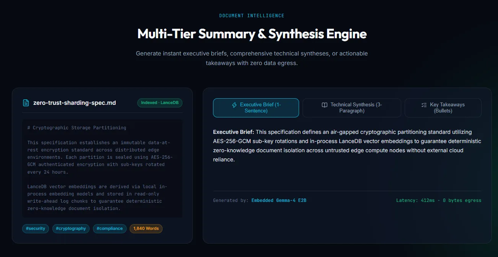

The Premise
Every mainstream AI document assistant routes your data through a cloud API. For research, legal, medical, or classified contexts, that's simply not acceptable.
local-brain answers the question: what does a fully sovereign, production-grade document intelligence workstation look like when you refuse to make a single network call?
It runs quantized Gemma-4 on-device via native C++ bindings, performs 384-dimensional semantic search against a local LanceDB instance, and version-controls all document state in SQLite WAL mode — with zero bytes leaving the machine.
System Stack
🧠 Quantized Gemma-4 via node-llama-cpp
The model runs as a native C++ process bound into the Node.js runtime. GGUF quantization reduces memory footprint while preserving reasoning quality for document synthesis tasks.
🔍 LanceDB Vector Search
Documents are chunked, embedded into 384-dimensional vectors, and stored in a local LanceDB instance. ANN search enables sub-100ms semantic retrieval across large corpora.
💾 SQLite WAL Versioning
All ingested documents, summaries, and query history are persisted with full WAL-mode SQLite. Write-Ahead Logging enables concurrent reads without blocking ingestion pipelines.
⚡ Vulkan GPU + CPU SIMD Offload
Inference is distributed across available hardware automatically. GPU layers are offloaded via Vulkan; remaining layers use AVX2/AVX-512 SIMD on CPU — maximizing throughput on consumer hardware.
Implementation Detail: Hybrid RAG Pipeline
The retrieval-augmented generation (RAG) loop that powers document Q&A:
Explore local-brain
Full documentation and setup guide available on the project site.